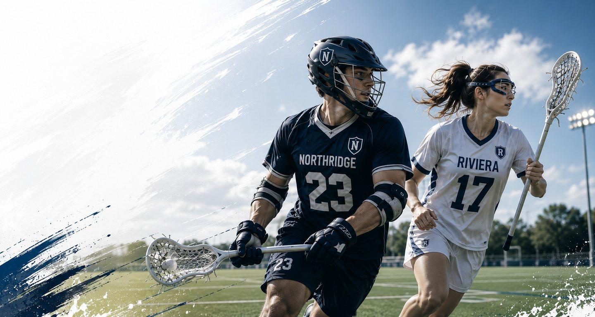

全国学生ラクロスリーグ
大学ラクロスの試合結果・データを全国7地区で毎日更新
男子・女子 全14リーグ・205チームの結果・順位・過去の対戦データを掲載 | 最終更新 2026-09-06
男子リーグ
女子リーグ
部活を応援する・強くする
全国の最新結果
| 日付 | リーグ | 時間 | カテゴリ | 対戦 | スコア | 会場 |
|---|---|---|---|---|---|---|
| 9月6日（日） | 関西・男子 | 9:25 | 1部 | 神戸大学 vs 大阪大学 | 3 - 3 | 宝が池球技場 |
| 9月6日（日） | 関西・男子 | 11:40 | 2部 | 龍谷大学 vs 京都工芸繊維大学 | 3 - 1 | 宝が池球技場 |
| 9月5日（土） | 関西・男子 | 10:00 | 2部 | 京都産業大学 vs 近畿大学 | 7 - 6 | 伏見桃山城運動公園多目的グラウンド |
| 9月5日（土） | 東海・女子 | 14:00 | 1部 | 愛知淑徳大学 vs 名古屋大学 | 5 - 8 | 愛・地球博多目的広場 |
| 9月5日（土） | 東海・女子 | 16:30 | 1部 | 愛知教育大学 vs 岐阜大学 | 18 - 4 | 岐阜大学 |
| 9月5日（土） | 北海道・男子 | 10:30 | リーグ | 小樽商科大学 vs 北海学園大学 | 4 - 3 | NOPPORO ヤシマ商会スポーツパークホッケー場 |
| 9月5日（土） | 北海道・男子 | 14:00 | リーグ | 北海道大学 vs 北海道科学大学 | 24 - 0 | NOPPORO ヤシマ商会スポーツパークホッケー場 |
| 9月5日（土） | 北海道・女子 | 13:30 | リーグ | 北海道大学 vs 合同 | 19 - 2 | 前田森林公園 |
| 9月5日（土） | 中四国・女子 | 10:00 | 1部 | 広島大学 vs 広島修道大学 | 22 - 3 | 福富多目的グラウンド |
| 9月5日（土） | 中四国・女子 | 14:30 | 2部 | 山口県立大学 vs 愛媛大学 | 14 - 2 | 福富多目的グラウンド |
読みもの
資金調達 2026-09-02
大学ラクロス部の「渉外」とは？ スポンサー探しを担当する学生の仕事と進め方
大学ラクロス部における「渉外」の役割を解説。企業スポンサーを探す基本プロセス、日本ラクロス協会(JLA)の企業パートナーシップの実例、属人化させない部内体制の作り方まで、公式情報をもとに紹介します。
キャリア 2026-09-01
ラクロス部OB・OGの「チームワーク」はキャリアでどう評価されるか
日本ラクロス協会と大手企業のパートナーシップに共通するキーワード「チームワーク」を手がかりに、ラクロス部OB・OGが学生時代の経験をキャリアの言葉にどう翻訳できるかを考えます。
大会ガイド 2026-08-31
大学ラクロスを初めて観戦するには？ チケット・見どころ・応援マナーガイド
大学ラクロスの試合を初めて観に行く人向けに、チケットの有無、会場の探し方、観戦の見どころ、応援マナーまでを日本ラクロス協会の公開情報をもとに解説します。